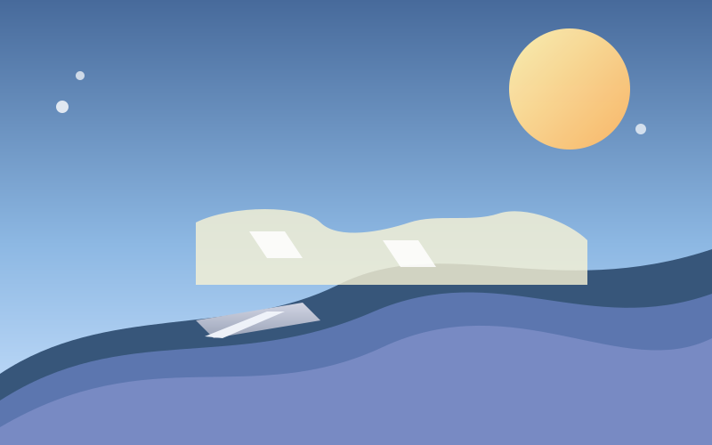
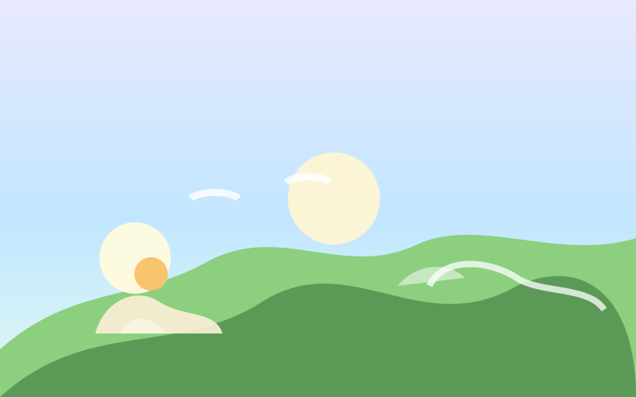
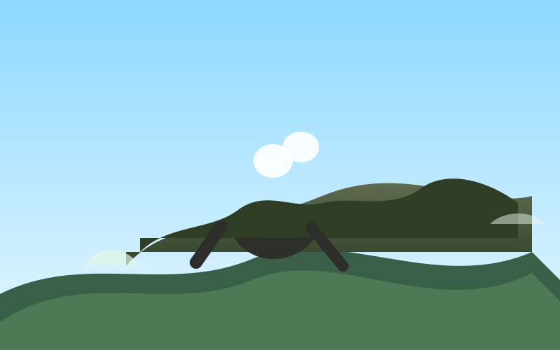
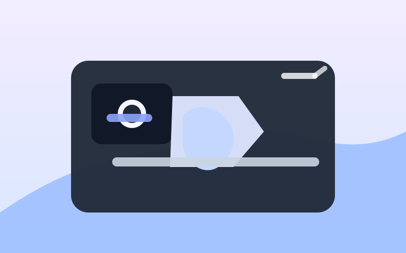
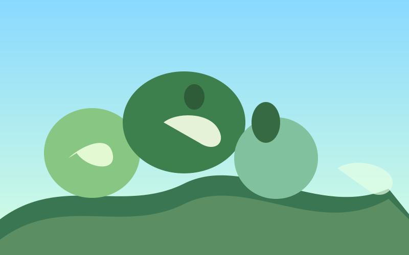
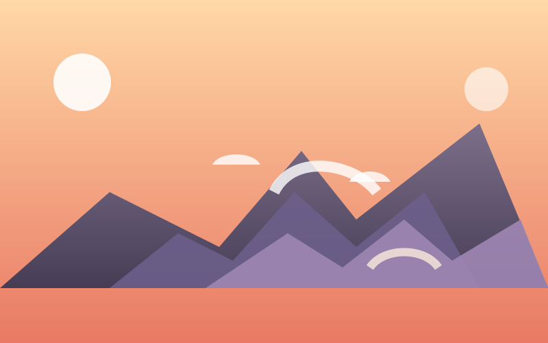

📅 15 Aprilie 2026
Transalpina: Drumul cu cea mai înaltă altitudine din România
Descoperi ce face Transalpina unică și cum să o percorzi în siguranță. Un ghid complet pentru această cursă populară...
Citește mai mult →Totul ce trebuie să știi înainte de a merge la munte
💡 Sfat: Poți interacționa cu harta pentru a vedea locații importante din Carpații României. Apasă pe marcatori pentru detalii!
Perioada ideală depinde de planurile tale:
Esențial:
Durata depinde de dificultate și condiții:
Drumeții solo sunt posibile cu precauții:
Pași importanți:
Da! Sunt disponibile mai mulți ghizi de drumeție:
Vremea din munți se schimbă rapid. Verifică prognoza zilei și duci haine impermeabile chiar dacă e soare. Vânt puternic și ploaie sunt frecvente chiar și în vară.
Temperatura scade cu ~0.6°C la fiecare 100m altitudine. Poartă straturi de îmbrăcăminte pe care să le poți scoate ușor. Evita transpirația excesivă.
Atenție la roci care se pot rostogoli. Cizme bune cu branț dur sunt esențiale. Merge încet pe terenuri neclare. Nu ignora semnele de pericol.
Ursii sunt blânzi dacă nu-i deranjezi. Fă zgomot pe traseu. Evita lăițe și cuiburi. Poartă spray anti-țânțari și verific-te de căpușe.
Bea apă regulat, nu doar când ai sete. Ia pauze frecvente. Recunoaște semnele de oboseală extremă (dificultate de concentrare, greață).
Dacă mergi pe vârfuri peste 2000m, acclimatizează-te treptat. Beți mai multă apă. Evita eforturile violente în primele zile.

Descoperi ce face Transalpina unică și cum să o percorzi în siguranță. Un ghid complet pentru această cursă populară...
Citește mai mult →
Cum să te pregătești pentru aventuri în muntele plin de viață al primăverii. Vremea imprevizibilă și cărări dificile...
Citește mai mult →
Comportamentul ursilor și ce să faci dacă întâlnești unul. Sfaturi de la experți locali pentru observarea faunei...
Citește mai mult →
Sfaturi și trucuri pentru fotografia de peisaj și wildlife. Echipament recomandat și locații ideale pentru fotografii...
Citește mai mult →
Regulile și regulamentele din parcurile naționale. Cum să drumeți responsabil și să protejezi mediul...
Citește mai mult →
Istoría, geografía și aventura de a ajunge pe cel mai înalt punct al României. Rutele și nivelul de dificultate...
Citește mai mult →